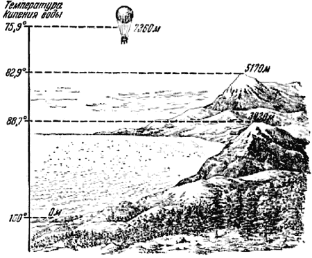

Холодный кипяток

Мы уже видели, что температура плавления льда — величина непостоянная. Она зависит от давления: чем выше давление, тем ниже температура, при которой плавится лёд.
А будет ли сказываться изменение давления воздуха или пара над водой на значении температуры кипения воды?
Попробуем ответить на этот вопрос с помощью простого рассуждения.
Кипение жидкости начинается тогда, когда пузырьки пара, образующиеся ниже поверхности, получают возможность выходить наружу. Чтобы пузырёк пара существовал и рос в своём объёме, он должен преодолевать внешнее давление: давление пара внутри пузырька должно по меньшей мере быть равным внешнему давлению или превышать его. Каждый знает, что нельзя беспредельно нагревать воду в плотно закрытом сосуде: рано или поздно образующийся пар обязательно разорвёт сосуд. Значит, давление пара растёт с повышением температуры. А раз это так, то мы можем заключить, что чем больше давление, тем выше температура кипящей воды.
Так оно в действительности и есть.
Температура кипения воды в паровом котле, работающем при двух атмосферах, равна 121 градусу, а при десяти атмосферах — 180 градусам. При 84,8 атмосферы температура кипения воды равна 300 градусам.
При пониженном давлении, наоборот, вода закипает при температуре более низкой, чем 100 градусов. Известно, что на высоких горах воздух разрежён, и чем выше гора, тем меньше давление воздуха над нею. Поэтому, например, на вершине Монблана (высота его равна 4810 метрам) вода кипит при 84 градусах, а на высоте 7360 метров — при 75,9 градуса (рис. 9).

Рис. 9. С понижением давления температура кипения воды понижается.
При давлении в одну восьмую атмосферы вода кипит уже при 50 градусах, а при давлении в одну восьмидесятую атмосферы при 10 градусах. В таком кипятке уже не сваришь мясо и, конечно, не обожжёшься, а скорее замёрзнешь.
А может ли случиться так, что вода, нагретая до 100 градусов, при обычном давлении не кипит? Да. Это бывает в тех случаях, когда вода не содержит никаких растворённых газов. В этом случае воду можно «перегреть» выше 100 градусов. Но если в такую перегретую воду попадает хотя бы немного газа, сразу же образуется огромное количество пара. Подобное явление может служить причиной взрыва паровых котлов.
Величина теплоты парообразования также изменяется в зависимости от условий, при которых происходит испарение. Чем выше температура воды, тем меньше надо добавить теплоты, чтобы перевести воду в пар. В конце концов можно достигнуть такого состояния, когда для перевода жидкости в пар уже не потребуется совершенно никакой теплоты. Для каждой жидкости это состояние характеризуется вполне определёнными температурой и давлением. Для воды это состояние наступает при 380,5 градуса и при давлении в 217,5 атмосферы.